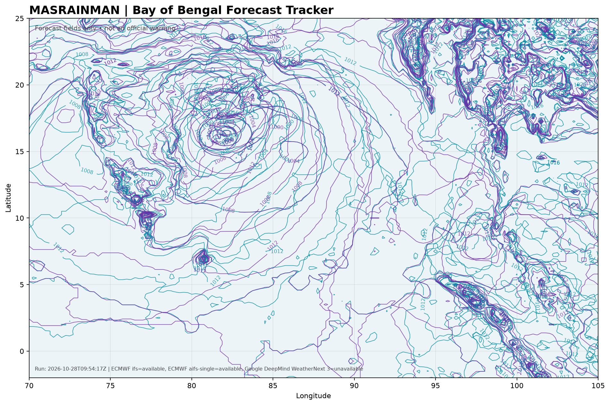

Loading latest run information…

Track lines and pressure contours are forecast guidance, not certainties. Probabilities are intentionally omitted unless supported by real ensemble/event data and a validated calculation. Model availability may vary by cycle.
Always follow India Meteorological Department (IMD) bulletins for official warnings.